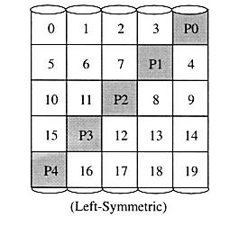

There are many types of RAID and some of the important ones are introduced
below:
A non-redundant disk array, or RAID level 0, has the lowest cost of any RAID organization because it does not employ redundancy at all. This scheme offers the best performance since it never needs to update redundant information. Surprisingly, it does not have the best performance. Redundancy schemes that duplicate data, such as mirroring, can perform better on reads by selectively scheduling requests on the disk with the shortest expected seek and rotational delays. Without, redundancy, any single disk failure will result in data-loss. Non-redundant disk arrays are widely used in super-computing environments where performance and capacity, rather than reliability, are the primary concerns.
Sequential blocks of data are written across multiple disks in stripes,
as follows:
The size of a data block, which is known as the "stripe width", varies
with the implementation, but is always at least as large as a disk's sector
size. When it comes time to read back this sequential data, all disks can
be read in parallel. In a multi-tasking operating system, there is a high
probability that even non-sequential disk accesses will keep all of the
disks working in parallel.
The traditional solution, called mirroring or shadowing, uses twice
as many disks as a non-redundant disk array. whenever data is written to
a disk the same data is also written to a redundant disk, so that there
are always two copies of the information. When data is read, it can be
retrieved from the disk with the shorter queuing, seek and rotational delays.
If a disk fails, the other copy is used to service requests. Mirroring
is frequently used in database applications where availability and transaction
time are more important than storage efficiency.
Memory systems have provided recovery from failed components with much less cost than mirroring by using Hamming codes. Hamming codes contain parity for distinct overlapping subsets of components. In one version of this scheme, four disks require three redundant disks, one less than mirroring. Since the number of redundant disks is proportional to the log of the total number of the disks on the system, storage efficiency increases as the number of data disks increases.
If a single component fails, several of the parity components will have inconsistent values, and the failed component is the one held in common by each incorrect subset. The lost information is recovered by reading the other components in a subset, including the parity component, and setting the missing bit to 0 or 1 to create proper parity value for that subset. Thus, multiple redundant disks are needed to identify the failed disk, but only one is needed to recover the lost information.
In you are unaware of parity, you can think of the redundant disk as having the sum of all data in the other disks. When a disk fails, you can subtract all the data on the good disks form the parity disk; the remaining information must be the missing information. Parity is simply this sum modulo 2.
A RAID 2 system would normally have as many data disks as the word size of the computer, typically 32. In addition, RAID 2 requires the use of extra disks to store an error-correcting code for redundancy. With 32 data disks, a RAID 2 system would require 7 additional disks for a Hamming-code ECC. Such an array of 39 disks was the subject of a U.S. patent granted to Unisys Corporation in 1988, but no commercial product was ever released.
For a number of reasons, including the fact that modern disk drives
contain their own internal ECC, RAID 2 is not a practical disk array scheme.
Bit-Interleaved
Parity (RAID Level 3)
One can improve upon memory-style ECC disk arrays by noting that, unlike memory component failures, disk controllers can easily identify which disk has failed. Thus, one can use a single parity rather than a set of parity disks to recover lost information.
In a bit-interleaved, parity disk array, data is conceptually interleaved bit-wise over the data disks, and a single parity disk is added to tolerate any single disk failure. Each read request accesses all data disks and each write request accesses all data disks and the parity disk. Thus, only one request can be serviced at a time. Because the parity disk contains only parity and no data, the parity disk cannot participate on reads, resulting in slightly lower read performance than for redundancy schemes that distribute the parity and data over all disks. Bit-interleaved, parity disk arrays are frequently used in applications that require high bandwidth but not high I/O rates. They are also simpler to implement than RAID levels 4, 5, and 6.
Here, the parity disk is written in the same way as the parity bit in
normal Random Access Memory (RAM), where it is the Exclusive Or of the
8, 16 or 32 data bits. In RAM, parity is used to detect single-bit data
errors, but it cannot correct them because there is no information available
to determine which bit is incorrect. With disk drives, however, we rely
on the disk controller to report a data read error. Knowing which disk's
data is missing, we can reconstruct it as the Exclusive Or (XOR) of all
remaining data disks plus the parity disk.
As a simple example, suppose we have 4 data disks and one parity disk. The sample bits are:
Disk 0 Disk 1
Disk 2 Disk 3
Parity
0
1
1
1
1
The parity bit is the XOR of these four data bits, which can be calculated
by adding them up and writing a 0 if the sum is even and a 1 if it is odd.
Here the sum of Disk 0 through Disk 3 is "3", so the parity is 1. Now if
we attempt to read back this data, and find that Disk 2 gives a read error,
we can reconstruct Disk 2 as the XOR of all the other disks, including
the parity. In the example, the sum of Disk 0, 1, 3 and Parity is "3",
so the data on Disk 2 must be 1.
Block-Interleaved
Parity (RAID Level 4)
The block-interleaved, parity disk array is similar to the bit-interleaved,
parity disk array except that data is interleaved across disks of arbitrary
size rather than in bits. The size of these blocks is called the striping
unit. Read requests smaller than the striping unit access only a single
data disk. Write requests must update the requested data blocks and must
also compute and update the parity block. For large writes that touch blocks
on all disks, parity is easily computed by exclusive-or'ing the new data
for each disk. For small write requests that update only one data disk,
parity is computed by noting how the new data differs from the old data
and applying those differences to the parity block. Small write requests
thus require four disk I/Os: one to write the new data, two to read the
old data and old parity for computing the new parity, and one to write
the new parity. This is referred to as a read-modify-write procedure. Because
a block-interleaved, parity disk array has only one parity disk, which
must be updated on all write operations, the parity disk can easily become
a bottleneck. Because of this limitation, the block-interleaved distributed
parity disk array is universally preferred over the block-interleaved,
parity disk array.
Block-Interleaved
Distributed-Parity (RAID Level 5)
The block-interleaved distributed-parity disk array eliminates the parity disk bottleneck present in the block-interleaved parity disk array by distributing the parity uniformly over all of the disks. An additional, frequently overlooked advantage to distributing the parity is that it also distributes data over all of the disks rather than over all but one. This allows all disks to participate in servicing read operations in contrast to redundancy schemes with dedicated parity disks in which the parity disk cannot participate in servicing read requests. Block-interleaved distributed-parity disk array have the best small read, large write performance of any redundancy disk array. Small write requests are somewhat inefficient compared with redundancy schemes such as mirroring however, due to the need to perform read-modify-write operations to update parity. This is the major performance weakness of RAID level 5 disk arrays.
The exact method used to distribute parity in block-interleaved distributed-parity disk arrays can affect performance. Following figure illustrates left-symmetric parity distribution.
Each square corresponds to a stripe unit. Each column of squares corresponds to a disk. P0 computes the parity over stripe units 0, 1, 2 and 3; P1 computes parity over stripe units 4, 5, 6, and 7 etc. (source: Reference 1)
A useful property of the left-symmetric parity distribution is that whenever you traverse the striping units sequentially, you will access each disk once before accessing any disk device. This property reduces disk conflicts when servicing large requests.
Parity is a redundancy code capable of correcting any single, self-identifying failure. As large disk arrays are considered, multiple failures are possible and stronger codes are needed. Moreover, when a disk fails in parity-protected disk array, recovering the contents of the failed disk requires successfully reading the contents of all non-failed disks. The probability of encountering an uncorrectable read error during recovery can be significant. Thus, applications with more stringent reliability requirements require stronger error correcting codes.
Once such scheme, called P+Q redundancy, uses Reed-Solomon codes to protect against up to two disk failures using the bare minimum of two redundant disk arrays. The P+Q redundant disk arrays are structurally very similar to the block-interleaved distributed-parity disk arrays and operate in much the same manner. In particular, P+Q redundant disk arrays also perform small write operations using a read-modify-write procedure, except that instead of four disk accesses per write requests, P+Q redundant disk arrays require six disk accesses due to the need to update both the `P' and `Q' information.
Striped Mirrors (RAID Level 10)
RAID 10 was not mentioned in the original 1988 article that defined RAID 1 through RAID 5. The term is now used to mean the combination of RAID 0 (striping) and RAID 1 (mirroring). Disks are mirrored in pairs for redundancy and improved performance, then data is striped across multiple disks for maximum performance. In the diagram below, Disks 0 & 2 and Disks 1 & 3 are mirrored pairs.
Obviously, RAID 10 uses more disk space to provide redundant data than RAID 5. However, it also provides a performance advantage by reading from all disks in parallel while eliminating the write penalty of RAID 5. In addition, RAID 10 gives better performance than RAID 5 while a failed drive remains unreplaced. Under RAID 5, each attempted read of the failed drive can be performed only by reading all of the other disks. On RAID 10, a failed disk can be recovered by a single read of its mirrored pair.
Tool to calculate storage efficiency given
the number of disks and the RAID level (source: Reference
3)
RAID Systems Need Tape Backups
It is worth remembering an important point about RAID systems. Even when you use a redundancy scheme like mirroring or RAID 5 or RAID 10, you must still do regular tape backups of your system. There are several reasons for insisting on this, among them: